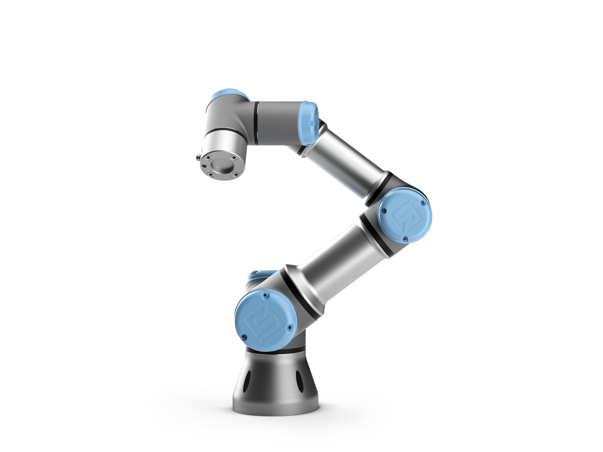

Futuro sostenible
En Futura creemos que cada acción cuenta para construir un mundo más sostenible. Nuestro enfoque combina tecnología avanzada, eficiencia energética y responsabilidad social para crear soluciones que respeten el planeta y mejoren la calidad de vida de las personas. Desde energías limpias hasta procesos inteligentes y materiales eco-amigables, trabajamos día a día para garantizar que el progreso no comprometa el medio ambiente. Únete a nosotros en esta misión y sé parte de un futuro donde la innovación y la sostenibilidad van de la mano.